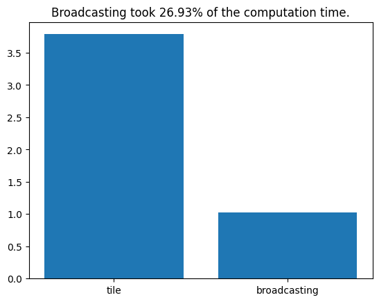

import numpy as np
import matplotlib.pyplot as plt
import timeChapter 4a
Chapter 4a
Analyzing Neural Time Series Data
Python code for Chapter 4 script A – converted from original Matlab by AE Studio (and ChatGPT)
Original Matlab code by Mike X Cohen
This code accompanies the book, titled “Analyzing Neural Time Series Data” (MIT Press).
Using the code without following the book may lead to confusion, incorrect data analyses, and misinterpretations of results.
Mike X Cohen and AE Studio assume no responsibility for inappropriate or incorrect use of this code.
Import necessary libraries
Variables, part I
# Let's start with variables. To create a variable, you simply assign it information.
# For example,
mike = 10
bob = 20
# If you type these in their own cell and run it (or run this cell), you will create the variables.
# Because the variables refer to numbers, ou can add them, multiply them, etc:
mike + bob # Note: You can also put comments after code
print((mike + bob) / (mike - bob))
# Notice that when the result is by itself, the output is suppressed,
# and when there is a 'print' statement, it outputs the results.
# Variables can also be strings:
mike = 'mike'
print(mike)
# Now we've re-assigned mike from a number to a string.
# Type 'whos' into the a new cell (this command is only avaliable in IPython).
# You can also assign arrays to variables:
a_simple_matrix = np.array([[3, 4, 5], [1, 2, 3], [9, 8, 7]])
# String and list concatenation:
mikes_full_name = mike + ' cohen'
mikes_two_fav_numbers = [7] + [23]
# Type whos in the command to see the properties of our variables.
# Note the difference between the numpy array and the list.-3.0
mike
Variable Type Data/Info
------------------------------
bob int 20
mike str mike
np module <module 'numpy' from '/Us<...>kages/numpy/__init__.py'>Variables, part II
# Variables can be more sophisticated. Variables can be lists or dictionaries, which
# are like blocks that may contain different kinds of information.
var1 = [np.array([1, 2, 3, 4, 5, 6, 7]), 'hello world', np.array([1, 3, 6, 7, 4, 3, 5, 6, 7, 87, 76, 43, 4, 5, 6, 767])]
print(var1)
print(var1[1]) # Python is zero-indexed (where Matlab is one-indexed), so the first element is 0, the second is 1, etc.
# Another type of variable is a dictionary. Dictionaries contain keys that
# are used for different kinds of data. For example:
ANTS = [{'name': 'mike', 'position': 'author', 'favorite_toothpaste_flavor': 'cinnamon', 'number_of_watches': 18, 'favorite_color': [0.8, 0.1, 0.8]}]
# You can also have a list of dictionaries
ANTS.append({'name': 'Your name here', 'position': 'reader', 'favorite_toothpaste_flavor': 'bratworst', 'number_of_watches': 1, 'favorite_color': [1, 1, 1]})
# Now you can get information about all keys from one specific element of
# the dictionary:
print(ANTS[0])
# Or information about one key within one member:
print(ANTS[0]['number_of_watches'])
# Or information about one key from all members (dictionaries are similar to Python structs,
# but we have to use a loop for a list of dictionaries to get all the values):
for ant in ANTS:
print(ant['favorite_toothpaste_flavor'])
# Note that this last result came out as two separate answers. If you want
# to combine them into a single output (e.g., a list), use square brackets (called list comprehension):
print([favorite_flavor['favorite_toothpaste_flavor'] for favorite_flavor in ANTS])[array([1, 2, 3, 4, 5, 6, 7]), 'hello world', array([ 1, 3, 6, 7, 4, 3, 5, 6, 7, 87, 76, 43, 4,
5, 6, 767])]
hello world
{'name': 'mike', 'position': 'author', 'favorite_toothpaste_flavor': 'cinnamon', 'number_of_watches': 18, 'favorite_color': [0.8, 0.1, 0.8]}
18
cinnamon
bratworst
['cinnamon', 'bratworst']Functions
Functions are modular pieces of code that can be stored in a separate file or within the same script. Most Python functions defined in scripts or modules (.py files) are viewable and editable. Some functions are part of compiled extension modules or built-in functions, and their source code may not be directly editable from within Python, but the source is often available online for open-source libraries.
# Functions may take inputs:
print(np.random.permutation(4) + 1) # permutation is a function from numpy's random module that randomly permutes integers. 4 is the input.
# Or a list:
print(np.mean([1, 3, 2, 4, 3, 5, 4, 6]))
# Most functions also give outputs:
permuted_integers = np.random.permutation(4) + 1 # now the output of the function is stored in a new variable
# Some functions can have multiple inputs:
random_number_matrix = np.random.rand(4, 6) # Here, we asked for a 4 x 6 matrix of random numbers
# Some functions have multiple outputs:
unique_elements, indices, inverse_indices, counts = np.unique(np.array([1, 2, 2, 3, 3, 3, 4, 4, 4, 4]), return_index=True, return_inverse=True, return_counts=True)
# This also shows list indexing, which we'll get to soon.
# IMPORTANT: You can use the output of one function as the input to another
# function. This is a powerful way to make your programming fast and
# efficient. On the other hand, if you embed functions to an extreme you
# might create unreadable code.
max_value = np.max(np.random.permutation(round(np.random.rand(1)[0] * 10) + 1))
# Use the help() function in Python to read about a function.
help(np.max)[4 3 1 2]
3.5
Help on function amax in module numpy:
amax(a, axis=None, out=None, keepdims=<no value>, initial=<no value>, where=<no value>)
Return the maximum of an array or maximum along an axis.
Parameters
----------
a : array_like
Input data.
axis : None or int or tuple of ints, optional
Axis or axes along which to operate. By default, flattened input is
used.
.. versionadded:: 1.7.0
If this is a tuple of ints, the maximum is selected over multiple axes,
instead of a single axis or all the axes as before.
out : ndarray, optional
Alternative output array in which to place the result. Must
be of the same shape and buffer length as the expected output.
See :ref:`ufuncs-output-type` for more details.
keepdims : bool, optional
If this is set to True, the axes which are reduced are left
in the result as dimensions with size one. With this option,
the result will broadcast correctly against the input array.
If the default value is passed, then `keepdims` will not be
passed through to the `amax` method of sub-classes of
`ndarray`, however any non-default value will be. If the
sub-class' method does not implement `keepdims` any
exceptions will be raised.
initial : scalar, optional
The minimum value of an output element. Must be present to allow
computation on empty slice. See `~numpy.ufunc.reduce` for details.
.. versionadded:: 1.15.0
where : array_like of bool, optional
Elements to compare for the maximum. See `~numpy.ufunc.reduce`
for details.
.. versionadded:: 1.17.0
Returns
-------
amax : ndarray or scalar
Maximum of `a`. If `axis` is None, the result is a scalar value.
If `axis` is an int, the result is an array of dimension
``a.ndim - 1``. If `axis` is a tuple, the result is an array of
dimension ``a.ndim - len(axis)``.
See Also
--------
amin :
The minimum value of an array along a given axis, propagating any NaNs.
nanmax :
The maximum value of an array along a given axis, ignoring any NaNs.
maximum :
Element-wise maximum of two arrays, propagating any NaNs.
fmax :
Element-wise maximum of two arrays, ignoring any NaNs.
argmax :
Return the indices of the maximum values.
nanmin, minimum, fmin
Notes
-----
NaN values are propagated, that is if at least one item is NaN, the
corresponding max value will be NaN as well. To ignore NaN values
(MATLAB behavior), please use nanmax.
Don't use `amax` for element-wise comparison of 2 arrays; when
``a.shape[0]`` is 2, ``maximum(a[0], a[1])`` is faster than
``amax(a, axis=0)``.
Examples
--------
>>> a = np.arange(4).reshape((2,2))
>>> a
array([[0, 1],
[2, 3]])
>>> np.amax(a) # Maximum of the flattened array
3
>>> np.amax(a, axis=0) # Maxima along the first axis
array([2, 3])
>>> np.amax(a, axis=1) # Maxima along the second axis
array([1, 3])
>>> np.amax(a, where=[False, True], initial=-1, axis=0)
array([-1, 3])
>>> b = np.arange(5, dtype=float)
>>> b[2] = np.NaN
>>> np.amax(b)
nan
>>> np.amax(b, where=~np.isnan(b), initial=-1)
4.0
>>> np.nanmax(b)
4.0
You can use an initial value to compute the maximum of an empty slice, or
to initialize it to a different value:
>>> np.amax([[-50], [10]], axis=-1, initial=0)
array([ 0, 10])
Notice that the initial value is used as one of the elements for which the
maximum is determined, unlike for the default argument Python's max
function, which is only used for empty iterables.
>>> np.amax([5], initial=6)
6
>>> max([5], default=6)
5
Indexing
Indexing is a powerful tool in Python to access particular parts of a variable.
# Indexing is very simple: Imagine you have 100 twinkies arranged
# in a 10 x 10 square:
twinkies = np.random.rand(10, 10)
print(twinkies)
# If you wanted to eat the twinkie in the 4th row, 8th column, you write:
the_twinkie_i_will_eat = twinkies[3, 7] # Note that Python uses 0-based indexing[[0.71680002 0.91444112 0.85337882 0.69393486 0.53377898 0.10552462
0.8325251 0.32966788 0.60414777 0.43907981]
[0.60223129 0.19649738 0.11138368 0.71313554 0.97254411 0.29302234
0.50892182 0.06174653 0.29760079 0.18459811]
[0.86871296 0.67628576 0.72403987 0.32141214 0.62569337 0.26442655
0.37324339 0.35766801 0.94052991 0.12013302]
[0.95698372 0.01533838 0.87996818 0.36103708 0.96636523 0.94047199
0.05760845 0.56294767 0.59013346 0.80633789]
[0.00443878 0.66507484 0.46783183 0.24749734 0.62522643 0.43081793
0.97331878 0.23196507 0.83054278 0.46982867]
[0.04513855 0.52286592 0.42894132 0.07598115 0.37216146 0.54241335
0.72229356 0.60185356 0.74494803 0.09559892]
[0.24329035 0.0538897 0.63931877 0.43486536 0.84296493 0.03724381
0.61648748 0.54327865 0.11589266 0.61994909]
[0.83270249 0.11868825 0.15322009 0.34767308 0.35336613 0.05274876
0.13274518 0.58680836 0.78530101 0.78775087]
[0.0897554 0.8269869 0.63522463 0.98638605 0.83295373 0.57299752
0.40682979 0.83908079 0.11665225 0.0371035 ]
[0.29550498 0.33689451 0.30962236 0.88264263 0.51978015 0.73404555
0.61042828 0.48795031 0.51967649 0.64214817]]The colon operator
In Python, we use the range() function or numpy’s arange() to create sequences of numbers. Unlike Matlab, which is inclusive:inclusive, most Python functions and the Python colon are inclusive:exclusive
# Observe:
print(list(range(1, 11)))
# You can also increment by a certain amount:
print(list(range(1, 11, 2)))
count2ten = np.arange(1, 10, 0.23956)
# The colon operator is also useful when indexing. Let's say you want to
# eat several twinkies:
twinkies_i_will_eat = twinkies[3:8, 1:7]
# Question: How big should the variable twinkies_i_will_eat be?
print(twinkies.shape, twinkies_i_will_eat.shape) # answer
# To count backwards, you must specify that you want to skip with a negative number:
rookie_mistake = list(range(10, 1))
how_the_pros_do_it = list(range(10, 0, -1))[1, 2, 3, 4, 5, 6, 7, 8, 9, 10]
[1, 3, 5, 7, 9]
(10, 10) (5, 6)Determining the sizes of variables
You can see variable sizes using the shape attribute (use np.shape(list) for variables that are not numpy arrays), but there are also ways to output matrix sizes into variables, which will be useful in many situations.
print(len(random_number_matrix)) # "len" returns the length of the first dimension, different from Matlab length
# You can use shape to find the sizes of all dimensions:
print(twinkies.shape)
print(twinkies.shape[0]) # or only specific dimensions...
print(np.size(twinkies)) # np.size returns the total number of elements
# These functions also produce outputs:
twinkie_array_size = twinkies.shape
print(np.prod(twinkie_array_size)) # np.prod returns the product of input numbers
# Of course, these functions work on non-numeric variables, e.g.,
print(len(ANTS))4
(10, 10)
10
100
100
2For-loops
# A for-loop is a way to iterate repeatedly:
for counting_variable in range(1, 11):
print(counting_variable) # print is used instead of disp in Python
# Another example:
for counting_variable in range(1, 11, 2):
print(f"The {counting_variable}th iteration value times 2 divided by 3 and added to 7 is {counting_variable * 2 / 3 + 7}.")
# You can embed loops within loops
# Variables must be initialized beforehand in Python
# Initialize array with zeros
product_matrix = np.zeros((5, 7))
for i in range(5):
for j in range(7):
product_matrix[i, j] = (i + 1) * (j + 1) # Python uses 0-based indexing, so we add 11
2
3
4
5
6
7
8
9
10
The 1th iteration value times 2 divided by 3 and added to 7 is 7.666666666666667.
The 3th iteration value times 2 divided by 3 and added to 7 is 9.0.
The 5th iteration value times 2 divided by 3 and added to 7 is 10.333333333333334.
The 7th iteration value times 2 divided by 3 and added to 7 is 11.666666666666668.
The 9th iteration value times 2 divided by 3 and added to 7 is 13.0.If-statements
# Exactly how it sounds
if 4 > 5:
print('Something has gone awry in the universe')
if 4 > 5:
print('Something is still very wrong')
else:
print('Whew! Everything\'s normal.') # note the escape character for the single quote
# The 'elif' statement in Python is similar to 'else if' in Matlab
for counting_variable in range(1, 11, 2):
if counting_variable == 1:
print(f"The {counting_variable}st iteration value times 2 divided by 3 and added to 7 is {counting_variable * 2 / 3 + 7}.")
elif counting_variable == 3:
print(f"The {counting_variable}rd iteration value times 2 divided by 3 and added to 7 is {counting_variable * 2 / 3 + 7}.")
else:
print(f"The {counting_variable}th iteration value times 2 divided by 3 and added to 7 is {counting_variable * 2 / 3 + 7}.")Whew! Everything's normal.
The 1st iteration value times 2 divided by 3 and added to 7 is 7.666666666666667.
The 3rd iteration value times 2 divided by 3 and added to 7 is 9.0.
The 5th iteration value times 2 divided by 3 and added to 7 is 10.333333333333334.
The 7th iteration value times 2 divided by 3 and added to 7 is 11.666666666666668.
The 9th iteration value times 2 divided by 3 and added to 7 is 13.0.Boolean (true/false)
# Sometimes, it's useful to know if a statement is TRUE or FALSE.
# You can use a double-equals sign:
print(5 == 5)
# The answer is 'True'. The opposite of true is false:
print(5 == 4)
# You can assign these answers to variables:
fourIsFive = (4 == 5)
print(type(fourIsFive))
# Note that 'fourIsFive' is type "bool", or boolean.
# Other related useful functions:
matrix0 = np.full((10, 3), False)
matrix1 = np.full((4, 12), True)
# You can use the not operator "not" to negate a statement:
print(not (1 == 1)) # False because the negation of 1==1 is false
print(not (4 > 3)) # Also false because the negation of 4>3 is false
print(not (4 < 3)) # True because it is false (not) that 4 is greater than 3. Tricky!
# Things can sometimes get tricky:
truthtest = (1 == 2)
# Remember:
# One equals sign is a statement ("you have this value").
# Two equals signs means you are asking a question ("are these the same?").True
False
<class 'bool'>
False
False
TrueBroadcasting
This cell in Matlab is about repmat, which is a function that repeats a matrix. The Python equivalent is numpy’s tile() function, but often you don’t need to use it because of broadcasting.
# In Python, we can use numpy's tile function to replicate matrices.
mat = np.random.rand(4, 4)
print(mat + 23)
# Now imagine that mat is EEG data with 4 electrodes and 10 time points:
mat = np.random.rand(4, 10)
# Now you want to subtract the mean over time:
meanOverTime = np.mean(mat, axis=1) # axis=1 computes the mean across columns
# We can use broadcasting in numpy to avoid using tile (repmat in Matlab).
# Broadcasting is a way to apply operations to arrays of different sizes.
# For example, we can subtract the mean over time from each column of mat:
matmean = mat - meanOverTime[:, np.newaxis]
# Note that we had to add a new axis to meanOverTime or we would have gotten an error.
print(matmean.shape, meanOverTime.shape)
print(matmean.shape, meanOverTime[:, np.newaxis].shape)
# Other examples of tile:
mat = np.array([[1, 2, 3], [10, 20, 30]])
print(np.tile(mat, (1, 1)))
print(np.tile(mat, (1, 2)))
print(np.tile(mat, (2, 1)))[[23.1523629 23.47661228 23.69606541 23.63615074]
[23.947989 23.59127802 23.78580446 23.41453622]
[23.08314859 23.20787045 23.48836488 23.31685668]
[23.92628478 23.66622238 23.10865491 23.45568586]]
(4, 10) (4,)
(4, 10) (4, 1)
[[ 1 2 3]
[10 20 30]]
[[ 1 2 3 1 2 3]
[10 20 30 10 20 30]]
[[ 1 2 3]
[10 20 30]
[ 1 2 3]
[10 20 30]]Broadcasting cont.
Broadcasting can also be used in place of Matlab’s bsxfun.
# For example, the following function will add 4 to a random matrix:
print(np.random.randn(10, 10) + 4)
# Broadcasting is more useful because it performs singleton-expansion,
# which means you may be able to avoid using tile (repmat in Matlab).
# For example, imagine a dataset with 100 channels and 100,000 time points:
a = np.random.rand(100, 100000)
# To subtract the mean of the entire time series using tile:
am = a - np.tile(np.mean(a, axis=1)[:, np.newaxis], (1, a.shape[1]))
# Using broadcasting:
am = a - np.mean(a, axis=1)[:, np.newaxis]
# Let's do a timing test...
start_time = time.time()
for i in range(100):
am = a - np.tile(np.mean(a, axis=1)[:, np.newaxis], (1, a.shape[1]))
end_time = time.time()
t_repmat = end_time - start_time
start_time = time.time()
for i in range(100):
am = a - np.mean(a, axis=1)[:, np.newaxis]
end_time = time.time()
t_broadcasting = end_time - start_time
plt.bar(['tile', 'broadcasting'], [t_repmat, t_broadcasting])
plt.title(f"Broadcasting took {100 * t_broadcasting / t_repmat:.2f}% of the computation time.")
plt.show()
# Thus, broadcasting is a bit faster but also more convenient to use, and more elegant.
# There are other similar functions to bsxfun, including map and list comprehensions.
# In addition to speed, these Pythonic approaches allow you to avoid using loops.
# For example, let's say you want to know the length of items in a list.
# Create list whose elements have variable lengths
c = [np.random.randn(round(np.random.rand() * 100)) for _ in range(40)]
# Now you want to know how many elements are in each cell.
# You can use a loop:
cell_lengths = []
for cell in c:
cell_lengths.append(len(cell))
# But a list comprehension is more efficient and Pythonic:
cell_lengths = [len(cell) for cell in c][[3.72575434 5.09479641 5.2844894 3.24154709 3.9001987 3.44699231
3.62769027 1.83274102 4.12573213 6.55017652]
[1.76086019 5.18311295 3.87075567 2.55194521 4.6167451 3.77451712
4.71012882 4.12877651 4.10565641 4.46323168]
[5.2840933 2.29680123 2.856885 4.93435378 5.21897896 4.89902387
5.089644 4.30083742 2.60948632 6.04621335]
[4.7885357 2.47254263 3.76052746 4.46794821 4.38429933 6.82641351
3.23409069 3.7604493 4.03813451 4.3738998 ]
[4.07727716 3.6706917 3.7112679 3.1798255 5.47535044 2.76429583
3.40867482 4.60628721 4.40658711 4.9536188 ]
[1.99924868 6.42063175 5.38427583 3.86909974 2.36371438 6.5740867
4.91466732 5.44524153 5.33388013 4.10217675]
[3.64033592 3.67308013 3.40544299 3.16816511 4.15287308 1.98080457
4.96347617 5.06319543 4.03626352 3.68192297]
[3.12478077 3.60611802 4.44336806 3.98176969 3.91365394 4.95863677
4.71192879 5.47153137 2.6375985 3.57457651]
[4.92538998 3.49080906 4.06847014 4.77631555 5.03077872 5.17921003
4.02388979 4.35883406 4.79960176 3.27782922]
[5.15510314 5.53106072 5.84572495 5.10580011 3.90009246 3.29202752
3.80428873 4.69067036 5.50983613 3.84142254]]
Continue on to script b…